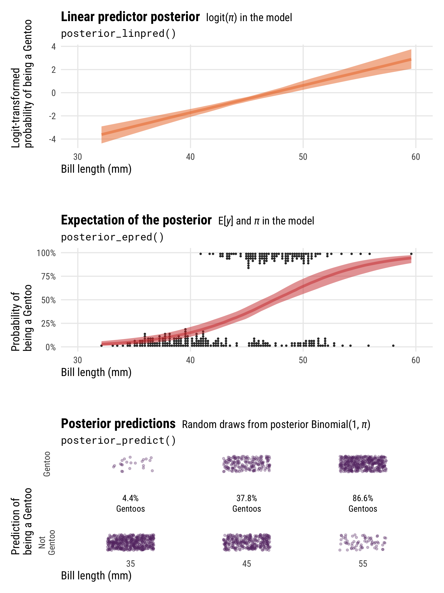

![]()
library(tidyverse) # ggplot, dplyr, and friends
library(patchwork) # Combine ggplot plots
library(ggtext) # Fancier text in ggplot plots
library(scales) # Labeling functions
library(brms) # Bayesian modeling through Stan
library(tidybayes) # Manipulate Stan objects in a tidy way
library(marginaleffects) # Calculate marginal effects
library(modelr) # For quick model grids
library(extraDistr) # For dprop() beta distribution with mu/phi
library(distributional) # For plotting distributions with ggdist
library(palmerpenguins) # Penguins!
library(kableExtra) # For nicer tables
# Make random things reproducible
set.seed(1234)
# Bayes stuff
# Use the cmdstanr backend for Stan because it's faster and more modern than
# the default rstan. You need to install the cmdstanr package first
# (https://mc-stan.org/cmdstanr/) and then run cmdstanr::install_cmdstan() to
# install cmdstan on your computer.
options(mc.cores = 4, # Use 4 cores
brms.backend = "cmdstanr")
bayes_seed <- 1234
# Colors from MetBrewer
clrs <- MetBrewer::met.brewer("Java")
# Custom ggplot themes to make pretty plots
# Get Roboto Condensed at https://fonts.google.com/specimen/Roboto+Condensed
# Get Roboto Mono at https://fonts.google.com/specimen/Roboto+Mono
theme_pred <- function() {
theme_minimal(base_family = "Roboto Condensed") +
theme(panel.grid.minor = element_blank(),
plot.background = element_rect(fill = "white", color = NA),
plot.title = element_text(face = "bold"),
strip.text = element_text(face = "bold"),
strip.background = element_rect(fill = "grey80", color = NA),
axis.title.x = element_text(hjust = 0),
axis.title.y = element_text(hjust = 0),
legend.title = element_text(face = "bold"))
}
theme_pred_dist <- function() {
theme_pred() +
theme(plot.title = element_markdown(family = "Roboto Condensed", face = "plain"),
plot.subtitle = element_text(family = "Roboto Mono", size = rel(0.9), hjust = 0),
axis.text.y = element_blank(),
panel.grid.major.y = element_blank(),
panel.grid.minor.y = element_blank())
}
theme_pred_range <- function() {
theme_pred() +
theme(plot.title = element_markdown(family = "Roboto Condensed", face = "plain"),
plot.subtitle = element_text(family = "Roboto Mono", size = rel(0.9), hjust = 0),
panel.grid.minor.y = element_blank())
}
update_geom_defaults("text", list(family = "Roboto Condensed", lineheight = 1))
Downloadable cheat sheets!
You can download PDF, SVG, and PNG versions of the diagrams and cheat sheets in this post, as well as the original Adobe Illustrator and InDesign files, at the bottom of this post
Do whatever you want with them! They’re licensed under Creative Commons Attribution-ShareAlike (BY-SA 4.0).
I’ve been working with Bayesian models and the Stan-based brms ecosystem (tidybayes, ggdist, marginaleffects, and friends) for a few years now, and I’m currently finally working through formal materials on Bayesianism and running an independent readings class with a PhD student at GSU where we’re reading Richard McElreath’s Statistical Rethinking and Alicia Johnson, Miles Ott, and Mine Dogucu’s Bayes Rules!, both of which are fantastic books (check out my translation of their materials to tidyverse/brms here).
Something that has always plagued me about working with Bayesian posterior distributions, but that I’ve always waved off as too hard to think about, has been the differences between posterior predictions, the expectation of the posterior predictive distribution, and the posterior of the linear predictor (or posterior_predict(), posterior_epred(), and posterior_linpred() in the brms world). But reading these two books has forced me to finally figure it out.
So here’s an explanation of my mental model of the differences between these types of posterior distributions. It’s definitely not 100% correct, but it makes sense for me.
For bonus fun, skip down to the incredibly useful diagrams and cheat sheets at the bottom of this post.
Let’s load some packages, load some data, and get started!
# Add a couple new variables to the penguins data:
# - is_gentoo: Indicator for whether or not the penguin is a Gentoo
# - bill_ratio: The ratio of a penguin's bill depth (height) to its bill length
penguins <- penguins |>
drop_na(sex) |>
mutate(is_gentoo = species == "Gentoo") |>
mutate(bill_ratio = bill_depth_mm / bill_length_mm)Normal Gaussian model
First we’ll look at basic linear regression. Normal or Gaussian models are roughly equivalent to frequentist ordinary least squares (OLS) regression. We estimate an intercept and a slope and draw a line through the data. If we include multiple explanatory variables or predictors, we’ll have multiple slopes, or partial derivatives or marginal effects (see here for more about that). But to keep things as simple and basic and illustrative as possible, we’ll just use one explanatory variable here.
In this example, we’re interested in the relationship between penguin flipper length and penguin body mass. Do penguins with longer flippers weigh more? Here’s what the data looks like:
ggplot(penguins, aes(x = flipper_length_mm, y = body_mass_g)) +
geom_point(size = 1, alpha = 0.7) +
geom_smooth(method = "lm", color = clrs[5], se = FALSE) +
scale_y_continuous(labels = label_comma()) +
coord_cartesian(ylim = c(2000, 6000)) +
labs(x = "Flipper length (mm)", y = "Body mass (g)") +
theme_pred()It seems like there’s a pretty clear relationship between the two. As flipper length increases, body mass also increases.
We can create a more formal model for the distribution of body mass, conditional on different values of flipper length, like this:
\[ \begin{aligned} \text{Body mass}_i &\sim \operatorname{Normal}(\mu_i, \sigma) \\ \mu_i &= \alpha + \beta \ \text{Flipper length}_i \end{aligned} \]
Or more generally:
\[ \begin{aligned} y_i &\sim \operatorname{Normal}(\mu_i, \sigma) \\ \mu_i &= \alpha + \beta x_i \end{aligned} \]
This implies that body mass follows a normal (or Gaussian) distribution with some average (\(\mu\)) and some amount of spread (\(\sigma\)), and that the \(\mu\) parameter is conditional on (or based on, or dependent on) flipper length.
Let’s run that model in Stan through brms (with all the default priors; in real life you’d want to set more official priors for the intercept \(\alpha\), the coefficient \(\beta\), and the overall model spread \(\sigma\))
model_normal <- brm(
bf(body_mass_g ~ flipper_length_mm),
family = gaussian(),
data = penguins
)
## Start samplingIf we look at the model results, we can see the means of the posterior distributions of each of the model’s parameters (\(\alpha\), \(\beta\), and \(\sigma\)). The intercept (\(\alpha\)) is huge and negative because flipper length is far away from 0, so it’s pretty uninterpretable. The \(\beta\) coefficient shows that a one-mm increase in flipper length is associated with a 50 gram increase in body mass. And the overall model standard deviation \(\sigma\) shows that there’s roughly 400 grams of deviation around the mean body mass.
broom.mixed::tidy(model_normal) |>
bind_cols(parameter = c("α", "β", "σ")) |>
select(parameter, term, estimate, std.error, conf.low, conf.high)
## # A tibble: 3 × 6
## parameter term estimate std.error conf.low conf.high
## <chr> <chr> <dbl> <dbl> <dbl> <dbl>
## 1 α (Intercept) -5874. 311. -6466. -5257.
## 2 β flipper_length_mm 50.2 1.54 47.1 53.1
## 3 σ sd__Observation 394. 15.7 366. 426.That table shows just the posterior means for each of these parameters, but these are technically all complete distributions. In this post we’re not interested in these actual values—we’re concerned with the outcome, or penguin weight here. (But you can see this post or this post or this post or this documentation for more about working with these coefficients and calculating marginal effects)
Going back to the formal model, so far we’ve looked at \(\alpha\), \(\beta\), and \(\sigma\), but what about \(\mu\) and the overall posterior distribution of the outcome \(y\) (or \(\operatorname{Normal}(\mu_i, \sigma)\))? This is where life gets a little trickier (and why this guide exists in the first place!). Both \(\mu\) and the posterior for \(y\) represent penguin body mass, but conceptually they’re different things. We’ll extract these different distributions with three different brms functions: posterior_predict(), posterior_epred(), and posterior_linpred() (the code uses predicted_draws(), epred_draws(), and linpred_draws(); these are tidybayes’s wrappers for the corresponding brms functions).
Note the newdata argument here. We have to feed a data frame of values to plug into to make these different posterior predictions. We could feed the original dataset with newdata = penguins, which would plug each row of the data into the model and generate 4000 posterior draws for it. Given that there are 333 rows in penguins data, using newdata = penguins would give us 333 × 4,000 = 1,332,000 rows. That’s a ton of data, and looking at it all together like that isn’t super useful unless we look at predictions across a range of possible predictors. We’ll do that later in this section and see the posterior predictions of weights across a range of flipper lengths. But here we’re just interested in the prediction of the outcome based on a single value of flipper lengths. We’ll use the average (200.967 mm), but it could easily be the median or whatever arbitrary number we want.
# Make a little dataset of just the average flipper length
penguins_avg_flipper <- penguins |>
summarize(flipper_length_mm = mean(flipper_length_mm))
# Extract different types of posteriors
normal_linpred <- model_normal |>
linpred_draws(newdata = penguins_avg_flipper)
normal_epred <- model_normal |>
epred_draws(newdata = penguins_avg_flipper)
normal_predicted <- model_normal |>
predicted_draws(newdata = penguins_avg_flipper,
seed = 12345) # So that the manual results with rnorm() are the same laterThese each show the posterior distribution of penguin weight, and each corresponds to a different part of the formal mathematical model with. We can explore these nuances if we look at these distributions’ means, medians, standard deviations, and overall shapes:
Code
summary_normal_linpred <- normal_linpred |>
ungroup() |>
summarize(across(.linpred, lst(mean, sd, median), .names = "{.fn}"))
summary_normal_epred <- normal_epred |>
ungroup() |>
summarize(across(.epred, lst(mean, sd, median), .names = "{.fn}"))
summary_normal_predicted <- normal_predicted |>
ungroup() |>
summarize(across(.prediction, lst(mean, sd, median), .names = "{.fn}"))
tribble(
~Function, ~`Model element`,
"<code>posterior_linpred()</code>", "\\(\\mu\\) in the model",
"<code>posterior_epred()</code>", "\\(\\operatorname{E(y)}\\) and \\(\\mu\\) in the model",
"<code>posterior_predict()</code>", "Random draws from posterior \\(\\operatorname{Normal}(\\mu_i, \\sigma)\\)"
) |>
bind_cols(bind_rows(summary_normal_linpred, summary_normal_epred, summary_normal_predicted)) |>
kbl(escape = FALSE) |>
kable_styling()| Function | Model element | mean | sd | median |
|---|---|---|---|---|
posterior_linpred() |
\(\mu\) in the model | 4206 | 21.8 | 4207 |
posterior_epred() |
\(\operatorname{E(y)}\) and \(\mu\) in the model | 4206 | 21.8 | 4207 |
posterior_predict() |
Random draws from posterior \(\operatorname{Normal}(\mu_i, \sigma)\) | 4207 | 386.7 | 4209 |
p1 <- ggplot(normal_linpred, aes(x = .linpred)) +
stat_halfeye(fill = clrs[3]) +
scale_x_continuous(labels = label_comma()) +
coord_cartesian(xlim = c(4100, 4300)) +
labs(x = "Body mass (g)", y = NULL,
title = "**Linear predictor** <span style='font-size: 14px;'>*µ* in the model</span>",
subtitle = "posterior_linpred(..., tibble(flipper_length_mm = 201))") +
theme_pred_dist() +
theme(plot.title = element_markdown())
p2 <- ggplot(normal_epred, aes(x = .epred)) +
stat_halfeye(fill = clrs[2]) +
scale_x_continuous(labels = label_comma()) +
coord_cartesian(xlim = c(4100, 4300)) +
labs(x = "Body mass (g)", y = NULL,
title = "**Expectation of the posterior** <span style='font-size: 14px;'>E[*y*] and *µ* in the model</span>",
subtitle = "posterior_epred(..., tibble(flipper_length_mm = 201))") +
theme_pred_dist()
p3 <- ggplot(normal_predicted, aes(x = .prediction)) +
stat_halfeye(fill = clrs[1]) +
scale_x_continuous(labels = label_comma()) +
coord_cartesian(xlim = c(2900, 5500)) +
labs(x = "Body mass (g)", y = NULL,
title = "**Posterior predictions** <span style='font-size: 14px;'>Random draws from posterior Normal(*µ*, *σ*)</span>",
subtitle = "posterior_predict(..., tibble(flipper_length_mm = 201))") +
theme_pred_dist()
(p1 / plot_spacer() / p2 / plot_spacer() / p3) +
plot_layout(heights = c(0.3, 0.05, 0.3, 0.05, 0.3))The most obvious difference between these different posterior predictions is the range of predictions. For posterior_linpred() and posterior_epred(), the standard error is tiny and the range of plausible predicted values is really narrow. For posterior_predict(), the standard error is substantially bigger, and the corresponding range of predicted values is huge.
To understand why, let’s explore the math going on behind the scenes in these functions. Both posterior_linpred() and posterior_epred() correspond to the \(\mu\) part of the model. They’re the average penguin weight as predicted by the linear model (hence linpred; linear predictor). We can see this if we plug a 201 mm flipper length into each row of the posterior and calculate mu by hand with \(\beta_0 + (\beta_1 \times 201)\):
linpred_manual <- model_normal |>
spread_draws(b_Intercept, b_flipper_length_mm) |>
mutate(mu = b_Intercept +
(b_flipper_length_mm * penguins_avg_flipper$flipper_length_mm))
linpred_manual
## # A tibble: 4,000 × 6
## .chain .iteration .draw b_Intercept b_flipper_length_mm mu
## <int> <int> <int> <dbl> <dbl> <dbl>
## 1 1 1 1 -6152. 51.5 4204.
## 2 1 2 2 -5872 50.2 4221.
## 3 1 3 3 -6263. 52.1 4202.
## 4 1 4 4 -6066. 51.1 4213.
## 5 1 5 5 -5740. 49.4 4191.
## 6 1 6 6 -5678. 49.2 4213.
## 7 1 7 7 -6107. 51.1 4160.
## 8 1 8 8 -5422. 48.0 4235.
## 9 1 9 9 -6303. 52.1 4177.
## 10 1 10 10 -6193. 51.6 4184.
## # ℹ 3,990 more rowsThat mu column is identical to what we calculate with posterior_linpred(). Just to confirm, we can plot the two distributions:
p1_manual <- linpred_manual |>
ggplot(aes(x = mu)) +
stat_halfeye(fill = colorspace::lighten(clrs[3], 0.5)) +
scale_x_continuous(labels = label_comma()) +
coord_cartesian(xlim = c(4100, 4300)) +
labs(x = "Body mass (g)", y = NULL,
title = "**Linear predictor** <span style='font-size: 14px;'>*µ* in the model</span>",
subtitle = "b_Intercept + (b_flipper_length_mm * 201)") +
theme_pred_dist() +
theme(plot.title = element_markdown())
p1_manual | p1Importantly, the distribution of the \(\mu\) part of the model here does not incorporate information about \(\sigma\). That’s why the distribution is so narrow.
The results from posterior_predict(), on the other hand, correspond to the \(y\) part of the model. Officially, they are draws from a random normal distribution using both the estimated \(\mu\) and the estimated \(\sigma\). These results contain the full uncertainty of the posterior distribution of penguin weight. To help with the intuition, we can do the same thing by hand when plugging in a 201 mm flipper length:
set.seed(12345) # To get the same results as posterior_predict() from earlier
postpred_manual <- model_normal |>
spread_draws(b_Intercept, b_flipper_length_mm, sigma) |>
mutate(mu = b_Intercept +
(b_flipper_length_mm *
penguins_avg_flipper$flipper_length_mm), # This is posterior_linpred()
y_new = rnorm(n(), mean = mu, sd = sigma)) # This is posterior_predict()
postpred_manual |>
select(.draw:y_new)
## # A tibble: 4,000 × 6
## .draw b_Intercept b_flipper_length_mm sigma mu y_new
## <int> <dbl> <dbl> <dbl> <dbl> <dbl>
## 1 1 -6152. 51.5 384. 4204. 4429.
## 2 2 -5872 50.2 401. 4221. 4506.
## 3 3 -6263. 52.1 390. 4202. 4159.
## 4 4 -6066. 51.1 409. 4213. 4027.
## 5 5 -5740. 49.4 362. 4191. 4411.
## 6 6 -5678. 49.2 393. 4213. 3499.
## 7 7 -6107. 51.1 417. 4160. 4423.
## 8 8 -5422. 48.0 351. 4235. 4138.
## 9 9 -6303. 52.1 426. 4177. 4055.
## 10 10 -6193. 51.6 426. 4184. 3793.
## # ℹ 3,990 more rowsThat y_new column here is the \(y\) part of the model and should have a lot more uncertainty than the mu column, which is just the \(\mu\) part of the model. Notably, the y_new column is the same as what we get when using posterior predict(). We’ll plot the two distributions to confirm:
p3_manual <- postpred_manual |>
ggplot(aes(x = y_new)) +
stat_halfeye(fill = colorspace::lighten(clrs[1], 0.5)) +
scale_x_continuous(labels = label_comma()) +
coord_cartesian(xlim = c(2900, 5500)) +
labs(x = "Body mass (g)", y = NULL,
title = "**Posterior predictions** <span style='font-size: 14px;'>Random draws from posterior Normal(*µ*, *σ*)</span>",
subtitle = "rnorm(b_Intercept + (b_flipper_length_mm * 201), sigma)") +
theme_pred_dist() +
theme(plot.title = element_markdown())
p3_manual | p3The results from posterior_predict() and posterior_linpred() have the same mean, but the full posterior predictions that incorporate the estimated \(\sigma\) have a much wider range of plausible values.
The results from posterior_epred() are a little strange to understand, and in the case of normal/Gaussian regression (and many other types of regression models!), they’re identical to the linear predictor (posterior_linpred()). These are the posterior draws of the expected value or mean of the the posterior distribution, or \(E(y_i)\) in the model. Behind the scenes, this is calculated by taking the average of each row’s posterior distribution and then taking the average of that.
Once again, a quick illustration can help. As before, we’ll manually plug a flipper length of 201 mm into the posterior estimates of the intercept and slope to calculate the \(\mu\) part of the model. We’ll then use that \(\mu\) along with the estimated \(\sigma\) to in rnorm() to generate the posterior predictive distribution, or the \(y\) part of the model. Finally, we’ll take the average of the y_new posterior predictive distribution to get the expectation of the posterior predictive distribution, or epred. It’s the same as what we get when using posterior_epred(); the only differences are because of randomness.
epred_manual <- model_normal |>
spread_draws(b_Intercept, b_flipper_length_mm, sigma) |>
mutate(mu = b_Intercept +
(b_flipper_length_mm *
penguins_avg_flipper$flipper_length_mm), # This is posterior_linpred()
y_new = rnorm(n(), mean = mu, sd = sigma)) # This is posterior_predict()
# This is posterior_epred()
epred_manual |>
summarize(epred = mean(y_new))
## # A tibble: 1 × 1
## epred
## <dbl>
## 1 4204.
# It's essentially the same as the actual posterior_epred()
normal_epred |>
ungroup() |>
summarize(epred = mean(.epred))
## # A tibble: 1 × 1
## epred
## <dbl>
## 1 4206.For mathy reasons, in Gaussian regression, this \(\operatorname{E(y)}\) happens to be identical to the linear predictor \(\mu\), so the results from posterior_linpred() and posterior_epred() are identical. And—fun fact—the brms code for posterior_epred() for Gaussian models doesn’t recalculate the average of the posterior. It just returns the linear predictor \(\mu\).
We can also look at these different types of posterior predictions across a range of possible flipper lengths. There’s a lot more uncertainty in the full posterior, since it incorporates the uncertainty of both \(\mu\) and \(\sigma\), while the uncertainty of the linear predictor/expected value of the posterior is much more narrow (and equivalent in this case):
p1 <- penguins |>
data_grid(flipper_length_mm = seq_range(flipper_length_mm, n = 100)) |>
add_linpred_draws(model_normal, ndraws = 100) |>
ggplot(aes(x = flipper_length_mm)) +
stat_lineribbon(aes(y = .linpred), .width = 0.95,
alpha = 0.5, color = clrs[3], fill = clrs[3]) +
geom_point(data = penguins, aes(y = body_mass_g), size = 1, alpha = 0.7) +
scale_y_continuous(labels = label_comma()) +
coord_cartesian(ylim = c(2000, 6000)) +
labs(x = "Flipper length (mm)", y = "Body mass (g)",
title = "**Linear predictor** <span style='font-size: 14px;'>*µ* in the model</span>",
subtitle = "posterior_linpred()") +
theme_pred_range()
p2 <- penguins |>
data_grid(flipper_length_mm = seq_range(flipper_length_mm, n = 100)) |>
add_epred_draws(model_normal, ndraws = 100) |>
ggplot(aes(x = flipper_length_mm)) +
stat_lineribbon(aes(y = .epred), .width = 0.95,
alpha = 0.5, color = clrs[2], fill = clrs[2]) +
geom_point(data = penguins, aes(y = body_mass_g), size = 1, alpha = 0.7) +
scale_y_continuous(labels = label_comma()) +
coord_cartesian(ylim = c(2000, 6000)) +
labs(x = "Flipper length (mm)", y = "Body mass (g)",
title = "**Expectation of the posterior** <span style='font-size: 14px;'>E[*y*] and *µ* in the model</span>",
subtitle = "posterior_epred()") +
theme_pred_range()
p3 <- penguins |>
data_grid(flipper_length_mm = seq_range(flipper_length_mm, n = 100)) |>
add_predicted_draws(model_normal, ndraws = 100) |>
ggplot(aes(x = flipper_length_mm)) +
stat_lineribbon(aes(y = .prediction), .width = 0.95,
alpha = 0.5, color = clrs[1], fill = clrs[1]) +
geom_point(data = penguins, aes(y = body_mass_g), size = 1, alpha = 0.7) +
scale_y_continuous(labels = label_comma()) +
coord_cartesian(ylim = c(2000, 6000)) +
labs(x = "Flipper length (mm)", y = "Body mass (g)",
title = "**Posterior predictions** <span style='font-size: 14px;'>Random draws from posterior Normal(*µ*, *σ*)</span>",
subtitle = "posterior_predict()") +
theme_pred_range()
(p1 / plot_spacer() / p2 / plot_spacer() / p3) +
plot_layout(heights = c(0.3, 0.05, 0.3, 0.05, 0.3))Phew. There are a lot of moving parts here with different types of posteriors and averages and variances. Here’s a helpful diagram that shows how everything is connected and which R functions calculate which parts:
Generalized linear models with link transformations
Generalized linear models (e.g., logistic, probit, ordered logistic, exponential, Poisson, negative binomial, etc.) use special link functions (e.g. logit, log, etc.) to transform the likelihood of an outcome into a scale that is more amenable to linear regression.
Estimates from these models can be used in their transformed scales (e.g., log odds in logistic regression) or can be back-transformed into their original scale (e.g., probabilities in logistic regression).
When working with links, the various Bayesian prediction functions return values on different scales, each corresponding to different parts of the model.
Logistic regression example
To show how different link functions work with posteriors from generalized linear models, we’ll use logistic regression with a single explanatory variable (again, for the sake of illustrative simplicity). We’re interested in whether a penguin’s bill length can predict if a penguin is a Gentoo or not. Here’s what the data looks like—Gentoos seem to have taller bills than their Chinstrap and Adélie counterparts.
ggplot(penguins, aes(x = bill_length_mm, y = as.numeric(is_gentoo))) +
geom_dots(aes(side = ifelse(is_gentoo, "bottom", "top")),
pch = 19, color = "grey20", scale = 0.2) +
geom_smooth(method = "glm", method.args = list(family = binomial(link = "logit")),
color = clrs[5], se = FALSE) +
scale_y_continuous(labels = label_percent()) +
labs(x = "Bill length (mm)", y = "Probability of being a Gentoo") +
theme_pred()We ultimately want to model that curvy line, but working with regular slopes and intercepts makes it tricky, since the data is all constrained between 0% and 100% and the line is, um, curvy. If we were economists we could just stick a straight line on that graph, call it a linear probability model, and be done. But that’s weird.
Instead, we can transform the outcome variable from 0s and 1s into logged odds or logits, which creates a nice straight line that we can use with regular old linear regression. Again, I won’t go into the details of how logistic regression works here (see this example or this tutorial or this post or this post for lots more about it).
Just know that logits (or log odds) are a transformation of probabilities (\(p\)) into a different scale using on this formula:
\[ \operatorname{logit}(p) = \log\left(\frac{p}{1 - p}\right) \]
This plot shows the relationship between the two scales. Probabilities range from 0 to 1, while logits typically range from −4 to 4ish, where logit of 0 is a \(p\) of 0.5. There are big changes in probability between −4ish and 4ish, but once you start getting into the 5s and beyond, the probability is all essentially the same.
tibble(x = seq(-8, 8, by = 0.1)) |>
mutate(y = plogis(x)) |>
ggplot(aes(x = x, y = y)) +
geom_line(size = 1, color = clrs[4]) +
labs(x = "Logit scale", y = "Probability scale") +
theme_pred()We can create a formal model for the probability of being a Gentoo following a binomial distribution with a size of 1 (i.e. the distribution contains only 0s and 1s—either the penguin is a Gentoo or it is not), and a probability \(\pi\) that is conditional on different values of bill length:
\[ \begin{aligned} \text{Is Gentoo?}_i &\sim \operatorname{Binomial}(1, \pi_i) \\ \operatorname{logit}(\pi_i) &= \alpha + \beta \ \text{Bill length}_i \end{aligned} \]
Or more generally,
\[ \begin{aligned} y_i &\sim \operatorname{Binomial}(1, \pi_i) \\ \operatorname{logit}(\pi_i) &= \alpha + \beta x_i \end{aligned} \]
Model time! Again, we’re using all the default priors here—in real life you’d want to set more official priors for the intercept \(\alpha\) and the coefficient \(\beta\), especially since \(\beta\) is on the logit scale and unlikely to ever be bigger than 3 or 4.
model_logit <- brm(
bf(is_gentoo ~ bill_length_mm),
family = bernoulli(link = "logit"),
data = penguins
)
## Start samplingWe could look at these coefficients and interpret their marginal effects, but here we’re more interested in the distribution of the outcome, not the coefficients (see here or here or here for examples of how to interpret logistic regression coefficients).
Let’s again extract these different posterior distributions with the three main brms functions: posterior_linpred(), posterior_epred(), and posterior_predict(). We’ll look at the posterior distribution when bill_length_mm is its average value, or 43.993:
# Make a little dataset of just the average bill length
penguins_avg_bill <- penguins |>
summarize(bill_length_mm = mean(bill_length_mm))
# Extract different types of posteriors
logit_linpred <- model_logit |>
linpred_draws(newdata = penguins_avg_bill)
logit_epred <- model_logit |>
epred_draws(newdata = penguins_avg_bill)
logit_predicted <- model_logit |>
predicted_draws(newdata = penguins_avg_bill)These each show the posterior distribution of being a Gentoo, but unlike the Gaussian posteriors we looked at earlier, each of these is measured completely differently now!
Code
summary_logit_linpred <- logit_linpred |>
ungroup() |>
summarize(across(.linpred, lst(mean, sd, median), .names = "{.fn}"))
summary_logit_epred <- logit_epred |>
ungroup() |>
summarize(across(.epred, lst(mean, sd, median), .names = "{.fn}"))
summary_logit_predicted <- logit_predicted |>
ungroup() |>
summarize(across(.prediction, lst(mean), .names = "{.fn}"))
tribble(
~Function, ~`Model element`, ~Values,
"<code>posterior_linpred()</code>", "\\(\\operatorname{logit}(\\pi)\\) in the model", "Logits or log odds",
"<code>posterior_linpred(transform = TRUE)</code> or <code>posterior_epred()</code>", "\\(\\operatorname{E(y)}\\) and \\(\\pi\\) in the model", "Probabilities",
"<code>posterior_predict()</code>", "Random draws from posterior \\(\\operatorname{Binomial}(1, \\pi)\\)", "0s and 1s"
) |>
bind_cols(bind_rows(summary_logit_linpred, summary_logit_epred, summary_logit_predicted)) |>
kbl(escape = FALSE) |>
kable_styling()| Function | Model element | Values | mean | sd | median |
|---|---|---|---|---|---|
posterior_linpred() |
\(\operatorname{logit}(\pi)\) in the model | Logits or log odds | -0.798 | 0.138 | -0.796 |
posterior_linpred(transform = TRUE) or posterior_epred()
|
\(\operatorname{E(y)}\) and \(\pi\) in the model | Probabilities | 0.311 | 0.029 | 0.311 |
posterior_predict() |
Random draws from posterior \(\operatorname{Binomial}(1, \pi)\) | 0s and 1s | 0.306 |
p1 <- ggplot(logit_linpred, aes(x = .linpred)) +
stat_halfeye(fill = clrs[3]) +
coord_cartesian(xlim = c(-1.5, -0.2)) +
labs(x = "Logit-transformed probability of being a Gentoo", y = NULL,
title = "**Linear predictor** <span style='font-size: 14px;'>logit(*π*) in the model</span>",
subtitle = "posterior_linpred(..., tibble(bill_length_mm = 44))") +
theme_pred_dist()
p2 <- ggplot(logit_epred, aes(x = .epred)) +
stat_halfeye(fill = clrs[2]) +
scale_x_continuous(labels = label_percent()) +
coord_cartesian(xlim = c(0.2, 0.45)) +
labs(x = "Probability of being a Gentoo", y = NULL,
title = "**Expectation of the posterior** <span style='font-size: 14px;'>E[*y*] and *π* in the model</span>",
subtitle = "posterior_epred(..., tibble(bill_length_mm = 44))") +
theme_pred_dist()
p3 <- logit_predicted |>
count(is_gentoo = .prediction) |>
mutate(prop = n / sum(n),
prop_nice = label_percent(accuracy = 0.1)(prop)) |>
ggplot(aes(x = factor(is_gentoo), y = n)) +
geom_col(fill = clrs[1]) +
geom_text(aes(label = prop_nice), nudge_y = -300, color = "white", size = 3) +
scale_x_discrete(labels = c("Not Gentoo (0)", "Gentoo (1)")) +
scale_y_continuous(labels = label_comma()) +
labs(x = "Prediction of being a Gentoo", y = NULL,
title = "**Posterior predictions** <span style='font-size: 14px;'>Random draws from posterior Binomial(1, *π*)</span>",
subtitle = "posterior_predict(..., tibble(bill_length_mm = 44))") +
theme_pred_range() +
theme(panel.grid.major.x = element_blank())
(p1 / plot_spacer() / p2 / plot_spacer() / p3) +
plot_layout(heights = c(0.3, 0.05, 0.3, 0.05, 0.3))Unlike the Gaussian/normal regression from earlier, the results from posterior_epred() and posterior_linpred() are not identical here. They still both correspond to the \(\pi\) part of the model, but on different scales. posterior_epred() provides results on the probability scale, un-logiting and back-transforming the results from posterior_linpred() (which provides results on the logit scale).
Again, technically, posterior_epred() isn’t just the back-transformed linear predictor (if you want that, you can use posterior_linpred(..., transform = TRUE)). More formally, posterior_epred() returns the expected values of the posterior, or \(\operatorname{E(y)}\), or the average of the posterior’s averages. But as with Gaussian regression, for mathy reasons this average-of-averages happens to be the same as the back-transformed \(\pi\), so \(E(y) = \operatorname{inverse logit}(\pi)\).
The results from posterior_predict() are draws from a random binomial distribution using the estimated \(\pi\), and they consist of only 0s and 1s (not Gentoo and Gentoo).
Showing these posterior predictions across a range of bill lengths also helps with the intuition here and illustrates the different scales and values that these posterior functions return:
-
posterior_linpred()returns the value of \(\pi\) on the logit scale -
posterior_epred()returns the value of \(\pi\) on the probability scale (technically it’s returning \(\operatorname{E(y)}\), but in practice those are identical here) -
posterior_predict()returns 0s and 1s, plotted here as points at bill lengths of 35, 45, and 55 mm
pred_logit_gentoo <- tibble(bill_length_mm = c(35, 45, 55)) |>
add_predicted_draws(model_logit, ndraws = 500)
pred_logit_gentoo_summary <- pred_logit_gentoo |>
group_by(bill_length_mm) |>
summarize(prop = mean(.prediction),
prop_nice = paste0(label_percent(accuracy = 0.1)(prop), "\nGentoos"))
p1 <- penguins |>
data_grid(bill_length_mm = seq_range(bill_length_mm, n = 100)) |>
add_linpred_draws(model_logit, ndraws = 100) |>
ggplot(aes(x = bill_length_mm)) +
stat_lineribbon(aes(y = .linpred), .width = 0.95,
alpha = 0.5, color = clrs[3], fill = clrs[3]) +
coord_cartesian(xlim = c(30, 60)) +
labs(x = "Bill length (mm)", y = "Logit-transformed\nprobability of being a Gentoo",
title = "**Linear predictor posterior** <span style='font-size: 14px;'>logit(*π*) in the model</span>",
subtitle = "posterior_linpred()") +
theme_pred_range()
p2 <- penguins |>
data_grid(bill_length_mm = seq_range(bill_length_mm, n = 100)) |>
add_epred_draws(model_logit, ndraws = 100) |>
ggplot(aes(x = bill_length_mm)) +
geom_dots(data = penguins, aes(y = as.numeric(is_gentoo), x = bill_length_mm,
side = ifelse(is_gentoo, "bottom", "top")),
pch = 19, color = "grey20", scale = 0.2) +
stat_lineribbon(aes(y = .epred), .width = 0.95,
alpha = 0.5, color = clrs[2], fill = clrs[2]) +
scale_y_continuous(labels = label_percent()) +
coord_cartesian(xlim = c(30, 60)) +
labs(x = "Bill length (mm)", y = "Probability of\nbeing a Gentoo",
title = "**Expectation of the posterior** <span style='font-size: 14px;'>E[*y*] and *π* in the model</span>",
subtitle = "posterior_epred()") +
theme_pred_range()
p3 <- ggplot(pred_logit_gentoo, aes(x = factor(bill_length_mm), y = .prediction)) +
geom_point(position = position_jitter(width = 0.2, height = 0.1, seed = 1234),
size = 0.75, alpha = 0.3, color = clrs[1]) +
geom_text(data = pred_logit_gentoo_summary, aes(y = 0.5, label = prop_nice), size = 3) +
scale_y_continuous(breaks = c(0, 1), labels = c("Not\nGentoo", "Gentoo")) +
labs(x = "Bill length (mm)", y = "Prediction of\nbeing a Gentoo",
title = "**Posterior predictions** <span style='font-size: 14px;'>Random draws from posterior Binomial(1, *π*)</span>",
subtitle = "posterior_predict()") +
theme_pred_range() +
theme(panel.grid.major.x = element_blank(),
panel.grid.major.y = element_blank(),
axis.text.y = element_text(angle = 90, hjust = 0.5))
(p1 / plot_spacer() / p2 / plot_spacer() / p3) +
plot_layout(heights = c(0.3, 0.05, 0.3, 0.05, 0.3))
There are a lot more moving parts here than with Gaussian regression, with different types of posteriors measured on three different scales! This diagram summarizes everything:
Distributional models with link transformations
Regression models often focus solely on the location parameter of the model (e.g., \(\mu\) in \(\operatorname{Normal}(\mu, \sigma)\); \(\pi\) in \(\operatorname{Binomial}(n, \pi)\)). However, it is also possible to specify separate predictors for the scale or shape parameters of models (e.g., \(\sigma\) in \(\operatorname{Normal}(\mu, \sigma)\), \(\phi\) in \(\operatorname{Beta}(\mu, \phi)\)). In the world of brms, these are called distributional models.
More complex models can use a collection of distributional parameters. Zero-inflated beta models estimate a mean \(\mu\), precision \(\phi\), and a zero-inflated parameter zi, while hurdle lognormal models estimate a mean \(\mu\), scale \(\sigma\), and a hurdle parameter hu. Even plain old Gaussian models become distributional models when a set of predictors is specified for \(\sigma\) (e.g. brm(y ~ x1 + x2, sigma ~ x2 + x3)).
When working with extra distributional parameters, the various Bayesian posterior prediction functions return values on different scales for each different component of the model, making life even more complex! Estimates and distributional parameters (what brms calls dpar in its functions) from these models can be used in their transformed scales or can be back-transformed into their original scale.
Beta regression example
To show how different link functions and distributional parameters work with posteriors from distributional models, we’ll use beta regression with a single explanatory variable. The penguin data we’ve been using doesn’t have any variables that are proportions or otherwise constrained between 0 and 1, so we’ll make one up. Here we’re interested in the the ratio of penguin bill depth (equivalent to the height of the bill; see this illustration) to bill length and whether flipper length influences that ratio. I know nothing about penguins (or birds, for that matter), so I don’t know if biologists even care about the depth/length ratio in bills, but it makes a nice proportion so we’ll go with it.
Here’s what the relationship looks like—as flipper length increases, the bill ratio decreases. Longer-flippered penguins have shorter and longer bills; shorter-flippered penguins have taller bills in proportion to their lengths. Or something like that.
ggplot(penguins, aes(x = flipper_length_mm, y = bill_ratio)) +
geom_point(size = 1, alpha = 0.7) +
geom_smooth(method = "lm", color = clrs[5], se = FALSE) +
labs(x = "Flipper length (mm)", y = "Ratio of bill depth / bill length") +
theme_pred()
We want to model that green line, and in this case it appears nice and straight and could probably be modeled with regular Gaussian regression, but we also want to make sure any predictions are constrained between 0 and 1 since we’re working with a proportion. Beta regression is perfect for this. Once again, I won’t go into detail about how beta models work—I have a whole detailed guide to it here.
With beta regression, we need to model two parameters of the beta distribution—the mean \(\mu\) and the precision \(\phi\). Ordinarily beta distributions are actually defined by two other parameters, called either shape 1 and shape 2 or \(\alpha\) and \(\beta\). The two systems of parameters are closely related and you can switch between them with a little algebra—see this guide for an example of how.
We can create a formal model for the distribution of the ratio of bill depth to bill length with a beta distribution with a mean \(\mu\) and precision \(\phi\), each of which are conditional on different values of flipper length. The models for \(\mu\) and \(\phi\) don’t have to use the same explanatory variables—I’m just doing that here for the sake of simplicity.
\[ \begin{aligned} \text{Bill ratio}_i &\sim \operatorname{Beta}(\mu_i, \phi_i) \\ \operatorname{logit}(\mu_i) &= \alpha_{\mu} + \beta_{\mu} \ \text{Flipper length}_i \\ \log({\phi}) &= \alpha_{\phi} + \beta_{\phi} \ \text{Flipper length}_i \end{aligned} \]
Or more generally,
\[ \begin{aligned} y_i &\sim \operatorname{Beta}(\mu_i, \phi_i) \\ \operatorname{logit}(\mu_i) &= \alpha_{\mu} + \beta_{\mu} x_i \\ \log({\phi}) &= \alpha_{\phi} + \beta_{\phi} x_i \end{aligned} \]
Let’s fit the model! But first, we’ll actually set more specific priors this time instead of relying on the defaults. Since \(\mu\) is on the logit scale, it’s unlikely to ever have any huge numbers (i.e. anything beyond ±4; recall the probability scale/logit scale plot earlier). The default brms priors for coefficients in beta regression models are flat and uniform, resulting in some potentially huge and implausible priors that lead to really bad model fit (and really slow sampling!). So we’ll help Stan a little here and explicitly tell it that the coefficients will be small (normal(0, 1)) and that \(\phi\) must be positive (exponential(1) with a lower bound of 0).
model_beta <- brm(
bf(bill_ratio ~ flipper_length_mm,
phi ~ flipper_length_mm),
family = Beta(),
init = "0",
data = penguins,
prior = c(prior(normal(0, 1), class = "b"),
prior(exponential(1), class = "b", dpar = "phi", lb = 0))
)
## Start samplingAgain, we don’t care about the coefficients or marginal effects here—see this guide for more about how to work with those. Let’s instead extract these different posterior distributions of bill ratios with the three main brms functions: posterior_linpred(), posterior_epred(), and posterior_predict(). And once again, we’ll use a single value flipper length (the average, 200.967 mm) to explore these distributions.
# Make a little dataset of just the average flipper length
penguins_avg_flipper <- penguins |>
summarize(flipper_length_mm = mean(flipper_length_mm))
# Extract different types of posteriors
beta_linpred <- model_beta |>
linpred_draws(newdata = penguins_avg_flipper)
beta_linpred_phi <- model_beta |>
linpred_draws(newdata = penguins_avg_flipper, dpar = "phi")
beta_linpred_trans <- model_beta |>
linpred_draws(newdata = penguins_avg_flipper, transform = TRUE)
beta_linpred_phi_trans <- model_beta |>
linpred_draws(newdata = penguins_avg_flipper, dpar = "phi", transform = TRUE)
beta_epred <- model_beta |>
epred_draws(newdata = penguins_avg_flipper)
beta_predicted <- model_beta |>
predicted_draws(newdata = penguins_avg_flipper)Notice the addition of two new posteriors here: linpred_draws(..., dpar = "phi") and linpred_draws(..., dpar = "phi", transform = TRUE). These give us the posterior distributions of the precision (\(\phi\)) distributional parameter, measured on different scales.
Importantly, for weird historical reasons, it is possible to use posterior_epred(..., dpar = "phi") to get the unlogged \(\phi\) parameter. However, conceptually this is wrong. An epred is the expected value, or average, of the posterior predictive distribution, or \(y\). It is not the expected value of the \(\phi\) part of the model. brms (or tidybayes) happily spits out the unlogged posterior distribution of \(\phi\) when you use posterior_epred(..., dpar = "phi"), but it’s technically not an epred despite its name. To keep the terminology consistent, it’s best to use posterior_linpred() when working with distributional parameters, using either transform = FALSE or transform = TRUE for the logged or the unlogged scale.
Code
summary_beta_linpred <- beta_linpred |>
ungroup() |>
summarize(across(.linpred, lst(mean, sd, median), .names = "{.fn}"))
summary_beta_linpred_phi <- beta_linpred_phi |>
ungroup() |>
summarize(across(phi, lst(mean, sd, median), .names = "{.fn}"))
summary_beta_linpred_phi_trans <- beta_linpred_phi_trans |>
ungroup() |>
summarize(across(phi, lst(mean, sd, median), .names = "{.fn}"))
summary_beta_epred <- beta_epred |>
ungroup() |>
summarize(across(.epred, lst(mean, sd, median), .names = "{.fn}"))
summary_beta_predicted <- beta_predicted |>
ungroup() |>
summarize(across(.prediction, lst(mean, sd, median), .names = "{.fn}"))
tribble(
~Function, ~`Model element`, ~Values,
"<code>posterior_linpred()</code>", "\\(\\operatorname{logit}(\\mu)\\) in the model", "Logits or log odds",
"<code>posterior_linpred(transform = TRUE)</code> or <code>posterior_epred()</code>", "\\(\\operatorname{E(y)}\\) and \\(\\mu\\) in the model", "Probabilities",
'<code>posterior_linpred(dpar = "phi")</code>', "\\(\\log(\\phi)\\) in the model", "Logged precision values",
'<code>posterior_linpred(dpar = "phi", transform = TRUE)</code>', "\\(\\phi\\) in the model", "Unlogged precision values",
"<code>posterior_predict()</code>", "Random draws from posterior \\(\\operatorname{Beta}(\\mu, \\phi)\\)", "Values between 0–1"
) |>
bind_cols(bind_rows(summary_beta_linpred, summary_beta_epred,
summary_beta_linpred_phi, summary_beta_linpred_phi_trans,
summary_beta_predicted)) |>
kbl(escape = FALSE) |>
kable_styling()| Function | Model element | Values | mean | sd | median |
|---|---|---|---|---|---|
posterior_linpred() |
\(\operatorname{logit}(\mu)\) in the model | Logits or log odds | -0.423 | 0.011 | -0.423 |
posterior_linpred(transform = TRUE) or posterior_epred()
|
\(\operatorname{E(y)}\) and \(\mu\) in the model | Probabilities | 0.396 | 0.003 | 0.396 |
posterior_linpred(dpar = "phi") |
\(\log(\phi)\) in the model | Logged precision values | 4.672 | 0.078 | 4.675 |
posterior_linpred(dpar = "phi", transform = TRUE) |
\(\phi\) in the model | Unlogged precision values | 107.284 | 8.329 | 107.259 |
posterior_predict() |
Random draws from posterior \(\operatorname{Beta}(\mu, \phi)\) | Values between 0–1 | 0.397 | 0.048 | 0.397 |
Neat! We have a bunch of different pieces here, all measured differently. Let’s look at all these different pieces simultaneously:
p1 <- ggplot(beta_linpred, aes(x = .linpred)) +
stat_halfeye(fill = clrs[3]) +
labs(x = "Logit-scale ratio of bill depth / bill length", y = NULL,
title = "**Linear predictor** <span style='font-size: 14px;'>logit(*µ*) in the model</span>",
subtitle = "posterior_linpred(\n ..., tibble(flipper_length_mm = 201))\n") +
theme_pred_dist()
p1a <- ggplot(beta_linpred_phi, aes(x = phi)) +
stat_halfeye(fill = colorspace::lighten(clrs[3], 0.3)) +
labs(x = "Log-scale precision parameter", y = NULL,
title = "**Precision parameter** <span style='font-size: 14px;'>log(*φ*) in the model</span>",
subtitle = 'posterior_linpred(\n ..., tibble(flipper_length_mm = 201),\n dpar = "phi")') +
theme_pred_dist()
p2 <- ggplot(beta_epred, aes(x = .epred)) +
stat_halfeye(fill = clrs[2]) +
labs(x = "Ratio of bill depth / bill length", y = NULL,
title = "**Expectation of the posterior** <span style='font-size: 14px;'>E[*y*] or *µ* in the model</span>",
subtitle = "posterior_epred(\n ..., tibble(flipper_length_mm = 201)) # or \nposterior_linpred(..., transform = TRUE)") +
theme_pred_dist()
p2a <- ggplot(beta_linpred_phi_trans, aes(x = phi)) +
stat_halfeye(fill = colorspace::lighten(clrs[2], 0.4)) +
labs(x = "Precision parameter", y = NULL,
title = "**Precision parameter** <span style='font-size: 14px;'>*φ* in the model</span>",
subtitle = 'posterior_linpred(\n ..., tibble(flipper_length_mm = 201),\n dpar = "phi", transform = TRUE)\n') +
theme_pred_dist()
p3 <- ggplot(beta_predicted, aes(x = .prediction)) +
stat_halfeye(fill = clrs[1]) +
coord_cartesian(xlim = c(0.2, 0.6)) +
labs(x = "Ratio of bill depth / bill length", y = NULL,
title = "**Posterior predictions** <span style='font-size: 14px;'>Random draws from posterior Beta(*µ*, *φ*)</span>",
subtitle = "posterior_predict()") +
theme_pred_dist()
layout <- "
AB
CC
DE
FF
GG
"
p1 + p1a + plot_spacer() + p2 + p2a + plot_spacer() + p3 +
plot_layout(design = layout, heights = c(0.3, 0.05, 0.3, 0.05, 0.3))As with logistic regression, the results from posterior_epred() and posterior_linpred() are not identical. They still both correspond to the \(\mu\) part of the model, but on different scales. posterior_epred() provides results on the probability or proportion scale, un-logiting and back-transforming the logit-scale results from posterior_linpred().
And once again, posterior_epred() isn’t technically the back-transformed linear predictor (if you want that, you can use posterior_linpred(..., transform = TRUE)). Instead it shows the expected values of the posterior, or \(\operatorname{E(y)}\), or the average of the posterior’s averages. But just like Gaussian regression and logistic regression, this average-of-averages still happens to be the same as the back-transformed \(\mu\), so \(E(y) = \operatorname{inverse logit}(\mu)\).
We can extract the \(\phi\) parameter by including the dpar = "phi" argument (or technically just dpar = TRUE, which returns all possible distributional parameters, which is helpful in cases with lots of them like zero-one-inflated beta regression). posterior_linpred(..., dpar = "phi", transform = TRUE) provides \(\phi\) on the original precision scale (however that’s measured), while posterior_linpred(..., dpar = "phi") returns a log-transformed version.
And finally, the results from posterior_predict() are draws from a random beta distribution using the estimated \(\mu\) and \(\phi\), and they consist of values ranging between 0 and 1.
Showing the posterior predictions for these different parameters across a range of flipper lengths will help with the intuition and illustrate the different scales, values, and parameters that these posterior functions return:
-
posterior_linpred()returns the value of \(\mu\) on the logit scale -
posterior_epred()returns the value of \(\mu\) on the probability scale (technically it’s returning \(\operatorname{E(y)}\), but in practice those are identical here) -
posterior_linpred(..., dpar = "phi")returns the logged value of \(\phi\) -
posterior_linpred(..., dpar = "phi", transform = TRUE)returns the value of \(\phi\) on its original scale -
posterior_predict()returns probabilities or proportions
p1 <- penguins |>
data_grid(flipper_length_mm = seq_range(flipper_length_mm, n = 100)) |>
add_linpred_draws(model_beta, ndraws = 100) |>
ggplot(aes(x = flipper_length_mm)) +
geom_point(data = penguins, aes(y = qlogis(bill_ratio)), size = 1, alpha = 0.7) +
stat_lineribbon(aes(y = .linpred), .width = 0.95,
alpha = 0.5, color = clrs[3], fill = clrs[3]) +
coord_cartesian(xlim = c(170, 230)) +
labs(x = "Flipper length (mm)", y = "Logit-scale ratio of\nbill depth / bill length",
title = "**Linear predictor posterior** <span style='font-size: 14px;'>logit(*µ*) in the model</span>",
subtitle = "posterior_linpred()") +
theme_pred_range()
p1a <- penguins |>
data_grid(flipper_length_mm = seq_range(flipper_length_mm, n = 100)) |>
add_linpred_draws(model_beta, ndraws = 100, dpar = "phi") |>
ggplot(aes(x = flipper_length_mm)) +
stat_lineribbon(aes(y = phi), .width = 0.95, alpha = 0.5,
color = colorspace::lighten(clrs[3], 0.3), fill = colorspace::lighten(clrs[3], 0.3)) +
coord_cartesian(xlim = c(170, 230)) +
labs(x = "Flipper length (mm)", y = "Log-scale\nprecision parameter",
title = "**Precision parameter** <span style='font-size: 14px;'>log(*φ*) in the model</span>",
subtitle = 'posterior_linpred(dpar = "phi")') +
theme_pred_range()
p2 <- penguins |>
data_grid(flipper_length_mm = seq_range(flipper_length_mm, n = 100)) |>
add_epred_draws(model_beta, ndraws = 100) |>
ggplot(aes(x = flipper_length_mm)) +
geom_point(data = penguins, aes(y = bill_ratio), size = 1, alpha = 0.7) +
stat_lineribbon(aes(y = .epred), .width = 0.95,
alpha = 0.5, color = clrs[2], fill = clrs[2]) +
coord_cartesian(xlim = c(170, 230)) +
labs(x = "Flipper length (mm)", y = "Ratio of\nbill depth / bill length",
title = "**Expectation of the posterior** <span style='font-size: 14px;'>E[*y*] or *µ* in the model</span>",
subtitle = 'posterior_epred()\nposterior_linpred(transform = TRUE)') +
theme_pred_range()
p2a <- penguins |>
data_grid(flipper_length_mm = seq_range(flipper_length_mm, n = 100)) |>
add_epred_draws(model_beta, ndraws = 100, dpar = "phi") |>
ggplot(aes(x = flipper_length_mm)) +
stat_lineribbon(aes(y = phi), .width = 0.95, alpha = 0.5,
color = colorspace::lighten(clrs[2], 0.4), fill = colorspace::lighten(clrs[2], 0.4)) +
coord_cartesian(xlim = c(170, 230)) +
labs(x = "Flipper length (mm)", y = "Precision parameter",
title = "**Precision parameter** <span style='font-size: 14px;'>*φ* in the model</span>",
subtitle = 'posterior_linpred(dpar = "phi",\n transform = TRUE)') +
theme_pred_range()
p3 <- penguins |>
data_grid(flipper_length_mm = seq_range(flipper_length_mm, n = 100)) |>
add_predicted_draws(model_beta, ndraws = 500) |>
ggplot(aes(x = flipper_length_mm)) +
geom_point(data = penguins, aes(y = bill_ratio), size = 1, alpha = 0.7) +
stat_lineribbon(aes(y = .prediction), .width = 0.95,
alpha = 0.5, color = clrs[1], fill = clrs[1]) +
coord_cartesian(xlim = c(170, 230)) +
labs(x = "Flipper length (mm)", y = "Ratio of\nbill depth / bill length",
title = "**Posterior predictions** <span style='font-size: 14px;'>Random draws from posterior Beta(*µ*, *φ*)</span>",
subtitle = "posterior_predict()") +
theme_pred_range()
layout <- "
AB
CC
DE
FF
GG
"
p1 + p1a + plot_spacer() + p2 + p2a + plot_spacer() + p3 +
plot_layout(design = layout, heights = c(0.3, 0.05, 0.3, 0.05, 0.3))So many moving parts in these distributional models! This diagram summarizes all these different posteriors, scales, and distributional parameters:
Bonus: Playing with posterior beta parameters
Before finishing with beta regression, we can play around with some of these posterior parameters to better understand what this kind of distributional model is actually doing. First, we can plot the posterior distribution using the means of the posterior \(\mu\) and \(\phi\) parameters instead of using the results from posterior_predict(), creating a pseudo-analytical posterior distribution. We’ll use the dprop() function from the extraDistr package instead of dbeta(), since dprop uses \(\mu\) and \(\phi\) instead of shape 1 and shape 2.
It’s not the greatest model at all—the actual distribution of bill ratios is bimodal (probably because of species-specific differences), but using the posterior values for \(\mu\) and \(\phi\) creates a distribution that picks up the average ratio.
In practice we typically don’t actually want to use these two parameters like this—we can use the results from posterior_predict() instead—but it’s cool that we can produce the same distribution with these parameters. That’s the magic of these distributional models!
mu <- summary_beta_epred$mean
phi <- summary_beta_linpred_phi_trans$mean
ggplot(penguins, aes(x = bill_ratio)) +
geom_density(aes(fill = "Actual data"), color = NA) +
stat_function(
aes(fill = glue::glue("Beta(µ = {round(mu, 3)}, φ = {round(phi, 2)})")),
geom = "area", fun = ~ extraDistr::dprop(., mean = mu, size = phi),
alpha = 0.7
) +
scale_fill_manual(values = c(clrs[5], clrs[1]), name = NULL) +
xlim(c(0.2, 0.65)) +
labs(x = "Ratio of bill depth / bill length", y = NULL,
title = "**Analytical posterior predictions** <span style='font-size: 14px;'>Average posterior *µ* and *φ* from the model</span>") +
theme_pred_dist() +
theme(legend.position = c(0, 0.9),
legend.justification = "left",
legend.key.size = unit(0.75, "lines"))For even more fun, because we modeled the \(\phi\) parameter as conditional on flipper length, it changes depending on different flipper lengths. This means that the actual posterior beta distribution is shaped differently across a whole range of lengths. Here’s what that looks like, with analytical distributions plotted at 180, 200, and 200 mm. As the precision increases, the distributions become more narrow and precise (which is also reflected in the size of the posterior_predict()-based credible intervals around the points)
muphi_to_shapes <- function(mu, phi) {
shape1 <- mu * phi
shape2 <- (1 - mu) * phi
return(lst(shape1 = shape1, shape2 = shape2))
}
beta_posteriors <- tibble(flipper_length_mm = c(180, 200, 220)) |>
add_linpred_draws(model_beta, ndraws = 500, dpar = TRUE, transform = TRUE) |>
group_by(flipper_length_mm) |>
summarize(across(c(mu, phi), ~mean(.))) |>
ungroup() |>
mutate(shapes = map2(mu, phi, ~as_tibble(muphi_to_shapes(.x, .y)))) |>
unnest(shapes) |>
mutate(nice_label = glue::glue("Beta(µ = {round(mu, 3)}, φ = {round(phi, 2)})"))
# Here are the parameters we'll use
# We need to convert the mu and phi values to shape1 and shape2 so that we can
# use dist_beta() to plot the halfeye distributions correctly
beta_posteriors
## # A tibble: 3 × 6
## flipper_length_mm mu phi shape1 shape2 nice_label
## <dbl> <dbl> <dbl> <dbl> <dbl> <glue>
## 1 180 0.485 57.3 27.8 29.5 Beta(µ = 0.485, φ = 57.29)
## 2 200 0.400 104. 41.5 62.4 Beta(µ = 0.4, φ = 103.92)
## 3 220 0.320 191. 61.3 130. Beta(µ = 0.32, φ = 191.31)
penguins |>
data_grid(flipper_length_mm = seq_range(flipper_length_mm, n = 100)) |>
add_predicted_draws(model_beta, ndraws = 500) |>
ggplot(aes(x = flipper_length_mm)) +
geom_point(data = penguins, aes(y = bill_ratio), size = 1, alpha = 0.7) +
stat_halfeye(data = beta_posteriors, aes(ydist = dist_beta(shape1, shape2), y = NULL),
side = "bottom", fill = clrs[1], alpha = 0.75) +
stat_lineribbon(aes(y = .prediction), .width = 0.95,
alpha = 0.1, color = clrs[1], fill = clrs[1]) +
geom_text(data = beta_posteriors,
aes(x = flipper_length_mm, y = 0.9, label = nice_label),
hjust = 0.5) +
coord_cartesian(xlim = c(170, 230)) +
labs(x = "Flipper length (mm)", y = "Ratio of\nbill depth / bill length",
title = "**Analytical posterior predictions** <span style='font-size: 14px;'>Average posterior *µ* and *φ* from the model</span>") +
theme_pred_range()When posterior_epred() isn’t just the back-transformed linear predictor
In all the examples in this guide, the results from posterior_epred() have been identical to the back-transformed results from posterior_linpred() (or posterior_linpred(..., transform = TRUE) if there are link functions). With logistic regression, posterior_epred() returned the probability-scale values of \(\pi\); with beta regression, posterior_epred() returned the proportion/probability-scale values of \(\mu\). This is the case for many model families in Stan and brms—for mathy reasons that go beyond my skills, the average of averages \(\operatorname{E(y)}\) is the same as the back-transformed linear predictor for lots of distributions.
This isn’t always the case though! In some families, like lognormal models, posterior_epred() and posterior_linpred(..., transform = TRUE) give different estimates. For lognormal models \(\operatorname{E(y)}\) isn’t just one of the distribution’s parameters—it’s this:
\[ \operatorname{E}(y | \mid \mu, \sigma) = \exp \left( \mu + \frac{\sigma^2}{2} \right) \]
I won’t show any examples of that here—this guide is already too long—but Matthew Kay has an example here that shows the differences between expected posterior values and back-transformed linear posterior values.
To see which kinds of families use fancier epreds, look at the source for brms::posterior_epred() here. Most of the families just use the back-transformed mu (prep\$dpars\$mu in the code), but some have special values, like lognormal’s with(prep$dpars, exp(mu + sigma^2 / 2))
tl;dr: Diagrams and cheat sheets
Keeping track of which kinds of posterior predictions you’re working with, on which scales, and for which parameters, can be tricky, especially with more complex models with lots of moving parts. To make life easier, here are all the summary diagrams in one place:
Normal Gaussian models
(Download a PDF) or (download original Adobe Illustrator file)
Generalized linear models with link transformations (logistic regression example)
(Download a PDF) or (download original Adobe Illustrator file)
Distributional models with link transformations (beta regression example)
(Download a PDF) or (download original Adobe Illustrator file)
Complete cheat sheet
And here’s an even more detailed summary cheat sheet as a printable PDF:
(Download a PDF) or (download the original Adobe InDesign file)
Citation
BibTeX citation:
@online{heiss2022,
author = {Heiss, Andrew},
title = {Visualizing the Differences Between {Bayesian} Posterior
Predictions, Linear Predictions, and the Expectation of Posterior
Predictions},
date = {2022-09-26},
url = {https://www.andrewheiss.com/blog/2022/09/26/guide-visualizing-types-posteriors/},
doi = {10.59350/xge39-emt86},
langid = {en}
}
For attribution, please cite this work as:
Heiss, Andrew. 2022. “Visualizing the Differences Between Bayesian
Posterior Predictions, Linear Predictions, and the Expectation of
Posterior Predictions.” September 26, 2022. https://doi.org/10.59350/xge39-emt86.